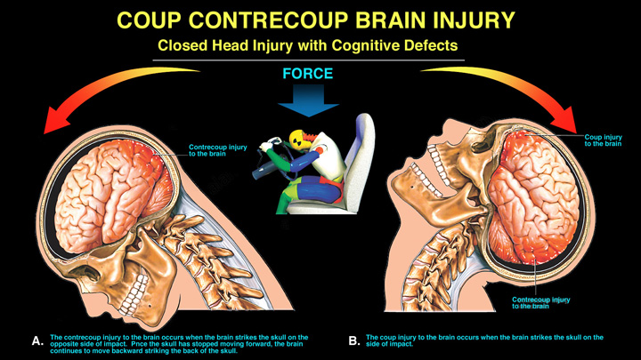
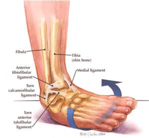
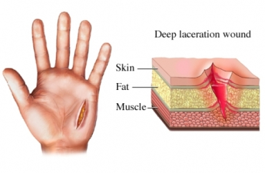
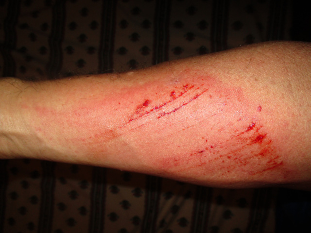
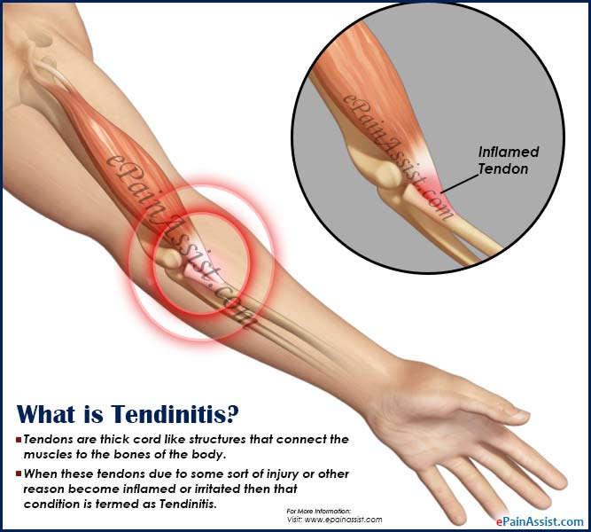
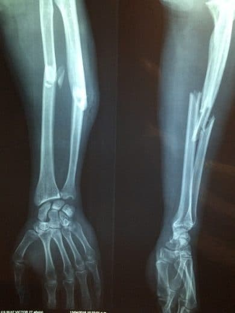

Sports Medicine
*Click on pictures to view more detailed description
| Injury |
Acute Treatment |
Picture |
Bill |
Concussion |
 |
Nick |
Lateral Ankle Sprain |
 |
Martin |
Laceration |
 |
Bob |
Abrasion |
 |
Adam |
Tendinitis |
 |
Jeff |
Fracture |
 |
My First Website
Vincent Coiner
Period 1
Sources
- https://www.aans.org/Patients/Neurosurgical-Conditions-and-Treatments/Concussion
- https://medlineplus.gov/ency/imagepages/19616.htm
- https://www.mayoclinic.org/diseases-conditions/sprains-and-strains/symptoms-causes/syc-20377938